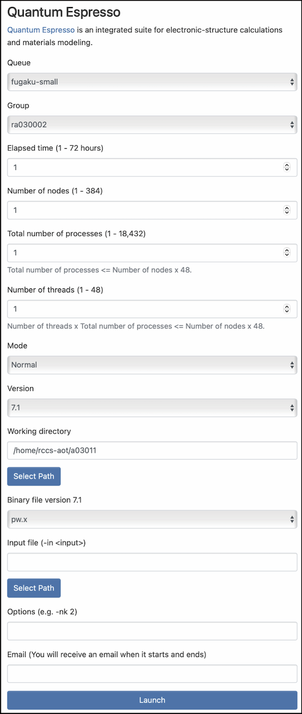

Open OnDemandの利用方法
はじめに
Open OnDemandは、Webブラウザから並列計算機システムを利用するためのWebポータルです。富岳のOpen OnDemandで提供しているアプリケーションは下記の3つにグループ分けしています。
- Batch Jobs：富岳の計算ノードに投入する実アプリケーション
- Interactive Apps：富岳やプリポスト環境で動作する対話的アプリケーション
- Passenger Apps：Open OnDemandがインストールされたサーバで動作するユーティリティ

商用ソフトウェアであるGaussian、GaussView、MATLAB、Vampirも利用可能ですが、富岳ポータルで利用登録を行ったユーザのみアイコンが表示されます。
Batch Jobs
|
 |
アイコンをクリックすると、計算リソースなどを入力するためのWebフォームが表示されます。入力項目はアプリケーション毎に異なります。入力項目のいくつかを説明します。
「Launch」をクリックすると、富岳にジョブが投入されます。 |
Interactive Apps
アイコンをクリックすると、計算リソースなどを入力するためのWebフォームが表示されます。入力項目はアプリケーション毎に異なります。「Queue」でfugakuもしくはprepostを選択すると、入力項目が変化します。「Launch」をクリックすると、「System」で選択されたシステムにジョブが投入されます。
計算ノード上でジョブが起動するとアプリケーションへのリンクが表示されます。そのリンクをクリックすると、該当のアプリケーションをWebブラウザから利用できます。

Passenger Apps
Active Jobs
ジョブの情報を閲覧できます。ジョブの削除も可能です。

Home Directory
ファイルのアップロード・ダウンロード・削除・編集を行えます。アップロード可能な最大サイズは10GBです。
rcloneを用いたクラウドストレージに対するファイル操作も可能です。Interactive AppsのRemote Desktopを起動し、ターミナルからrcloneもしくはrclone-browserを実行すると、rcloneの設定を行うことができます（富岳ヘルプデスクではrcloneの設定のサポートは行っておりませんのでご了承ください）。その後にHome Directoryを起動すると、設定されたクラウドストレージにアクセスできます。

Shell Access
Webブラウザ上でコマンドラインインタフェースを用いた操作を行うことができます。

補足
- Open OnDemandのテンポラル用のディレクトリは${HOME}/ondemandです。Open OnDemandを利用すると自動生成されます。削除しても問題ありませんが、履歴やInteractive Appsでユーザがインストールした拡張機能も削除されます。
- Internet Explorer 11はサポートしていません。
- Remote Desktopでコピーアンドペーストを利用したい場合は、Chromeブラウザをご利用ください。